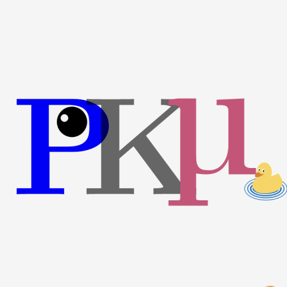

Peking University
Undergraduate Student, 2022 - Present
Focus: Physics, Artificial Intelligence

赵志政
Zhizheng Zhao
Zhizheng Zhao
Hi, I'm Zhizheng Zhao, an undergraduate student (junior) at the School of Physics, Peking University.
Access more info / Contact me through the following links:
Education 📖

Research 💡

Let's Verify and Reinforce Image Generation Step by Step
Renrui Zhang*,
Chengzhuo Tong*,
Zhizheng Zhao*,
Ziyu Guo*,
Huaidong Zhang,
Manyuan Zhang,
Peng Gao,
Hongsheng Li
* Co-first authorship
Chain-of-Thought (CoT) reasoning has been effective in large models for complex tasks but is underexplored in image generation. We introduce a study on applying CoT to autoregressive image generation, focusing on test-time computation, Direct Preference Optimization (DPO), and combining these techniques for better results. Our experiments show significant performance improvements. We also propose the Potential Assessment Reward Model (PARM), which adaptively evaluates each generation step by combining existing reward models. Using these methods, we enhance the Show-o model, achieving a +24% improvement on GenEval, surpassing Stable Diffusion 3 by +15%. This work offers new insights into CoT and image generation.
CVPR 2025

PKμ - Probing and Knocking with Muons
On the cosmic scale, the discrepancy between theory and observation indirectly hints at the existence of dark matter, yet dark matter has never been directly observed in the laboratory. Due to the penetrating nature of muons (μons), their minimal interaction with other particles, and their ability to be detected at the Earth's surface, muons have emerged as ideal candidates for dark matter detection. However, this approach has been underexplored in previous research. We propose a new method for detecting dark matter using muons, focusing on the accuracy and precision of detector signal processing. By optimizing signal extraction and analysis algorithms, we aim to enhance the sensitivity of dark matter detection, offering a new possibility for its direct observation.
In Preparation
Experiences 🌍

Shenzhen International Quantum Academy
Visiting Student
Visiting Student
|
Stay inspired and keep exploring!
|